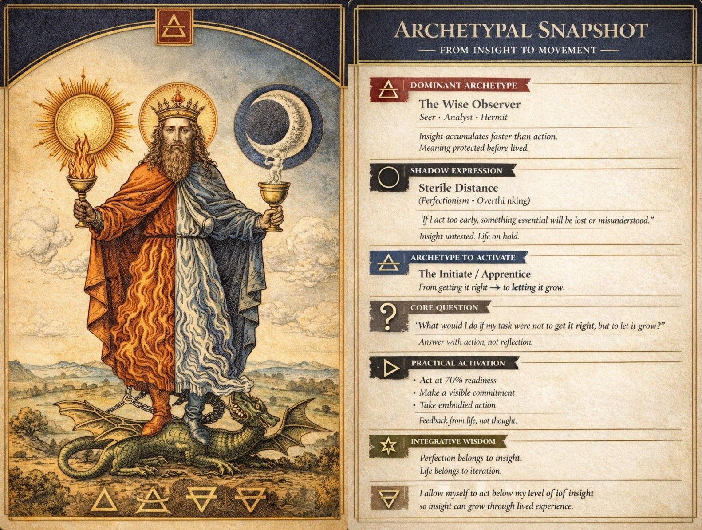
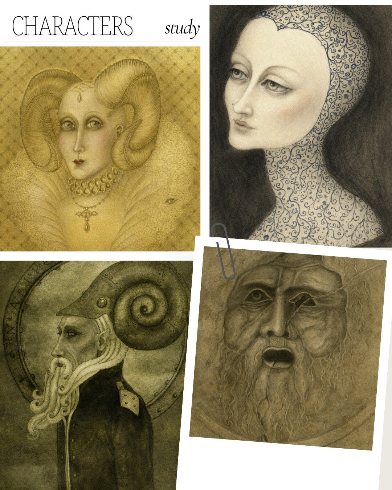

Meet the inner figures
running your life.
A 90-minute Jungian session that maps your archetypal constellation — and leaves you with three artifacts to remember it by: a Map, a Snapshot card, and a Fantasy Portrait.

Once upon a time, there was an ugly duckling who felt different, misunderstood, and strangely misaligned — until one day it discovered its true nature. It had never been a duck at all, but a beautiful swan.
Until we truly know who we are, we may live a life that was never meant for us. Beneath the surface, invisible currents shape our choices and repeat old patterns. Once brought into awareness, these forces turn into allies — hidden gifts waiting to be claimed.
How a Reading unfolds
The intake
A short questionnaire before we meet: what you're navigating, what's calling, what you keep postponing.
The session
Ninety minutes, on Zoom or in person in Singapore. Reflective enquiry, story exploration, association work with artworks. No slideshow, no formula.
The Map & Snapshot
Within a week: a detailed Archetypal Map of your constellation, and a Snapshot card you can keep on your desk.
The Portrait
A Fantasy Portrait of the archetype most alive in you right now — a lasting image of what the session revealed.
What you take with you

The Archetypal Map
A detailed chart of your inner constellation — the forces at play, where they support you, and where they pull against each other.

The Snapshot Card
Your constellation distilled onto a single card — a visual reference you can return to whenever a decision needs it.

The Fantasy Portrait
A fine art portrait of your most alive archetype. More than an artwork — a mirror of what was revealed.
Where to begin

The Archetype Quiz
Which archetype is running your life? Twelve questions, instant result — a first glimpse of your inner constellation.
Free Take the QuizThe Archetypal Reading
The flagship session. Ninety minutes of Jungian exploration — and you leave with the Map, the Snapshot card, and a Fantasy Portrait of your most alive archetype.
S$489 Explore the Reading
The Threshold Package
The Reading plus three coaching sessions and a second Portrait — six to eight weeks of guided work for a real life transition.
S$1,290 See the PackagesWhat clients say
"I've had two wonderful sessions of Active Imagination with Anne. They've been deeply supportive in helping me access my own imagination and intuition."
— Client"When I met Anne, I knew that my creative coaching experience would be truly transformative. Her empathy and deeply intuitive approach to coaching has enabled me to uncover parts of my true self and overcome creative blockages and fears that I didn't even realize were holding me back. Two of her greatest strengths are active listening and giving personalised insightful guidance, which has reignited my creative spark — something I had found difficult to reawaken for many years. It was reassuring to have a coach who is able to make powerful connections between my true purpose, core values, and my life long ambition to become a writer."
"Anne's support has not only given me clarity but has also instilled a newfound confidence in my abilities. If you're looking for someone who genuinely understands the creative process in a safe and trusted space and can help you move past fear based limitations, I cannot recommend Anne highly enough."
— Kelly C., WriterWhich archetype is running your life?
Twelve questions. Instant result. Free. Then five short letters — one archetype lesson a day — and what your result suggests about the work ahead.
Take the AssessmentFrequently asked questions
Most people start with the Archetypal Reading — it's a complete experience on its own, and everything deeper builds on it. If you're not sure, book a free 30-minute discovery call and we'll find the right fit together.
If you're feeling stuck, uncertain about a decision, or sensing a gap between where you are and where you want to be, this work can help. The discovery call is free and carries no obligation — if we're not a match, I'll say so and point you well.
This work combines Jungian depth psychology, narrative coaching, and active imagination to access the unconscious patterns shaping your decisions — and it leaves you with tangible artifacts, not just notes.
Sessions happen over Zoom worldwide, or in person in Singapore. You can reschedule with 24 hours' notice. Everything is available in English, German, and Italian.
The first step is a conversation
Thirty minutes, free, no obligation. Tell me where you are and what you're looking for.
Book a Free Discovery Call